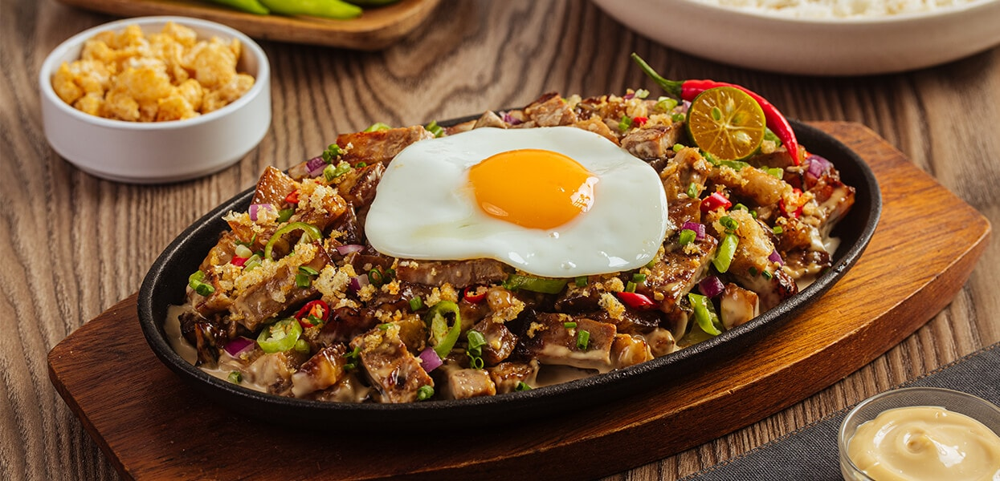

Let's put a spin on a traditional favorite! An all time beloved classic of crispy chicharon and grilled meats served in a creamy, tangy mayo sauce made extra rich with egg for a mouthwatering pork appetizer.
Prep: 15 mins
Cook: 1 hr 30 mins
Total: 1 hr 45 mins
Servings: 6
In a large pot, combine pig face, vinegar, soy sauce, garlic, peppercorns, bay leaves, about 1 tablespoon salt, and enough water to completely cover pork.
Bring to a boil, skimming scum that floats on top. Lower heat, cover, and simmer for about 50 minutes to 1 hour or until meat is tender. Remove from heat and drain well, discarding liquid.
Over a hot grill, grill pork for about 7 to 10 minutes on each side or until crisp and slightly charred. Or arrange in a single layer on a baking sheet and broil in a 450 F oven for about 4 to 5 minutes or until nicely charred.
Remove from heat, allow to cool to touch, and chop meat.
In a large bowl, combine chopped meat, onions, chili peppers, calamansi juice., and liquid seasoning.
And liver spread and gently stir to combine. Season with salt and pepper to taste.
To serve, transfer to sizzling hot plates.
Return home